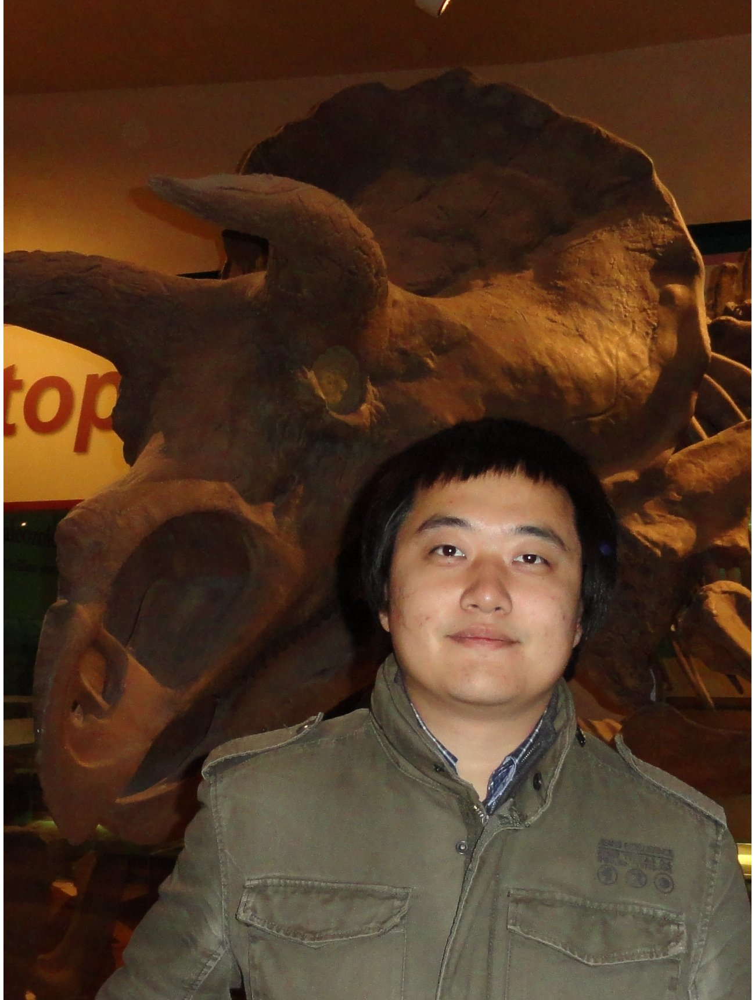

About Me
I
am a 3rd-year Ph.D. student at the
Department of Computer Science, College of
William and Mary. I am a part of LENS group, under supervision of Prof. Gang Zhou. I received my M.Eng. in Pattern Recognition and
Intelligent Systems in June 2010 from National Key
Laboratory of
Pattern Recognition at Institute of
Automation, CAS, and my B.Sc.
degree in Computer Science in June 2007 from Nanjing
University.
My
research
interests are mobile and ubiquitous computing. Particularly, my current
work includes the following topics:
- - Context-aware Bandwidth and Power Management on Smartphones
- - Effective & Efficient Context Recognition Systems
Contact
Email: xqi AT email.wm.edu
McGlothlin-Street Hall, 107a,
Department of Computer Science ,
College of William and Mary,
Williamsburg, VA 23187-8795
News
- [Paper] May. 8th, 2013 - One paper is accepted by Ubicomp 2013!
- [Talk] Apr.
10th,2013-I present my AdaSense paper at
RTAS 2013, Philadelphia, PA.
- [Paper] Dec. 14th, 2012 - One paper is accepted by RTAS 2013!
- [Patent] Dec.13th,
2012 - Our patent (US
Patent Application Serial No. 13/715,076) has
been filed and is pending!
- [Talk] Dec. 5th, 2012 - I present my RadioSense paper at RTSS 2012, San Juan, Puerto Rico.
- [Talk] Oct. 5th, 2012 - I present my RadioSense paper at the Colloquium of Computer Science Deptartment, College of William and Mary.
- [Talk] Sep. 5th ~ 7th, 2012 - I present our SAPSM paper at Ubicomp 2012, Pittsburgh, PA.
- [Honor] Sep. 4th, 2012 - I am nominated for the 2012-13 Park Gradute Award at College of William and Mary.
- [Paper] Aug. 30th, 2012 - One paper is accepted by TPDS!
- [Paper] Aug. 1st, 2012 - One paper is accepted by RTSS 2012!
- [Paper] May 10th, 2012 - One paper is accepted by Ubicomp 2012!